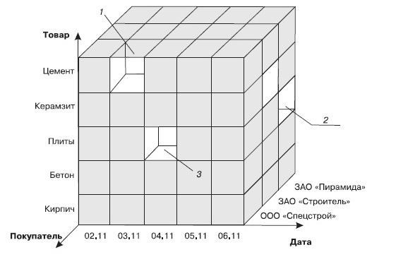
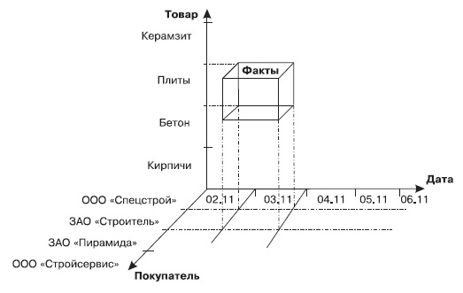

Многомерный анализ данных
Хранилище данных содержит непротиворечивые консолидированные исторические данные и предоставляет инструментальные средства для их анализа с целью поддержки принятия стратегических решений. Информационные ресурсы хранилища данных формируются на основе фиксируемых на протяжении продолжительного периода времени моментальных снимков баз данных оперативной информационной системы и, возможно, различных внешних источников. В хранилищах данных применяются технологии баз данных, OLAP, глубинного анализа данных, визуализации данных.
Термин OLAP (On-Line Analytical Processing) служит для описания модели представления данных и соответственно технологии их обработки в хранилищах данных. В OLAP применяется многомерное представление агрегированных данных для обеспечения быстрого доступа к стратегически важной информации в целях углубленного анализа. Приложения OLAP должны обладать следующими основными свойствами:
поддержка сложных расчетов;
правильный учет фактора времени.
Преимущества OLAP:
повышение производительности производственного персонала, разработчиков прикладных программ. Своевременный доступ к стратегической информации.
предоставление пользователям достаточных возможностей для внесения собственных изменений в схему.
приложения OLAP опираются на хранилища данных и системы OLTP, получая от них актуальные данные, что дает сохранениеконтроля целостности корпоративных данных.
уменьшение нагрузки на системы OLTP и хранилища данных.
Основные элементы и операции OLAP
В основе OLAP лежит понятие гиперкуба, или многомерного куба данных, в ячейках которого хранятся анализируемые данные.
Факт - это числовая величина которая располагается в ячейках гиперкуба. Один OLAP-куб может обладать одним или несколькими показателями.
Измерение (dimension) - это множество объектов одного или нескольких типов, организованных в виде иерархической структуры и обеспечивающих информационный контекст числового показателя. Измерение принято визуализировать в виде ребрамногомерного куба.
Объекты, совокупность которых и образует измерение, называются членами измерений (members). Члены измерений визуализируют как точки или участи, откладываемые на осях гиперкуба.
Ячейка (cell) - атомарная структура куба, соответствующая полному набору конкретный значений измерений.
Иерархия - группировка объектов одного измерения в объекты более высокого уровня. Например - день-месяц-год. Иерархии в измерениях необходимы для возможности агрегации и детализации значений показателей согласно их иерархической структуре.Иерархия целиком основывается на одном измерении и формируется из уровней.
В OLAP-системах поддерживаются следующие базовые операции:
поворот;
проекция. При проекции значения в ячейках, лежащих на оси проекции, суммируются по некоторому предопределенному закону;
раскрытие ( drill-down ). Одно из значений измерения заменяется совокупностью значений из следующего уровня иерархии измерения; соответственно заменяются значения в ячейках гиперкуба;
свертка ( roll-up/drill-up ). Операция, обратная раскрытию;
сечение ( slice-and-dice ).
Основы многомерного представления данных
Сущность многомерного представления данных состоит в следующем. Большинство реальных бизнес-процессов описывается множеством показателей, свойств, атрибутов и т.д. Например, для описания процесса продаж могут понадобиться сведения о наименованиях товаров или их групп, о поставщике и покупателе, о городе, где производились продажи, а также о ценах, количествах проданных товаров и общих суммах. Кроме того, для отслеживания процесса во времени должен быть введен в рассмотрение такой атрибут, как дата. Если собрать всю эту информацию в таблицу, то она окажется сложной для визуального анализа и осмысления. Более того, она может оказаться избыточной: если, например, один и тот же товар продавался в один и тот же день в различных городах, то придется несколько раз повторить одно и то же соответствие «город — товар» с указанием различных суммы и количества. Все это способно окончательно запутать и сбить с толку любого, кто попытается извлечь из такой таблицы полезную информацию с целью анализа текущего состояния продаж и поиска путей оптимизации процесса торговли. Указанные проблемы возникают по одной простой причине: в плоской таблице хранятся многомерные данные.
Проясним суть вопроса с помощью геометрической аналогии. Представьте себе трехмерную фигуру (например, тетраэдр или параллелепипед) и спроецируйте его на плоскость, а затем по полученной плоской проекции попытайтесь оценить форму и размеры исходной объемной фигуры. Сделать это будет трудно: во-первых, потеряна информация об одном измерении, а во-вторых, фигура теперь представлена в совершенно несвойственном ей плоском виде.
Примерно то же самое можно сказать об информации, представленной несколькими рядами данных. Каждый такой ряд (поле таблицы) можно рассматривать как своего рода информационное измерение, и тогда «плоская» таблица может быть интерпретирована как результат преобразования многомерной информационной структуры в совершенно несвойственную ей плоскую форму. Чтобы компенсировать потерю информации от исключения одного или нескольких измерений, приходится усложнять структуру таблицы, а это в большинстве случаев приводит к тому, что разобраться в ней становится очень сложно.
Можно пойти другим путем — выполнить декомпозицию информации в несколько более простых таблиц, связать их некоторым набором отношений и перейти к реляционной модели, которую используют классические базы данных. Однако доказано, что реляционная модель не является оптимальной с точки зрения задач анализа, поскольку предполагает высокую степень нормализации, в результате чего снижается скорость выполнения запросов. Поэтому разработка многомерной модели представления данных, которая реализуется с помощью многомерных кубов, стала естественным шагом.
Замечание
Не следует пытаться провести геометрическую интерпретацию понятия «многомерный куб», поскольку это просто служебный термин, описывающий метод представления данных.
Измерения и факты — базовые понятия многомерной модели данных
В основе многомерного представления данных лежит их разделение на две группы — измерения и факты.
Измерения — это категориальные атрибуты, наименования и свойства объектов, участвующих в некотором бизнес-процессе. Значениями измерений являются наименования товаров, названия фирм-поставщиков и покупателей, ФИО людей, названия городов и т.д. Измерения могут быть и числовыми, если какой-либо категории (например, наименованию товара) соответствует числовой код, но в любом случае это данные дискретные, то есть принимающие значения из ограниченного набора. Измерения качественно описывают исследуемый бизнес-процесс.
Факты — это данные, количественно описывающие бизнес-процесс, непрерывные по своему характеру, то есть они могут принимать бесконечное множество значений. Примеры фактов — цена товара или изделия, их количество, сумма продаж или закупок, зарплата сотрудников, сумма кредита, страховое вознаграждение и т.д.
Структура многомерного куба
Многомерный куб можно рассматривать как систему координат, осями которой являются измерения, например Дата, Товар, Покупатель. По осям будут откладываться значения измерений — даты, наименования товаров, названия фирм-покупателей, ФИО физических лиц и т.д.
В такой системе каждому набору значений измерений (например, «дата — товар — покупатель») будет соответствовать ячейка, в которой можно разместить числовые показатели (то есть факты), связанные с данным набором. Таким образом, между объектами бизнес-процесса и их числовыми характеристиками будет установлена однозначная связь.
Принцип организации многомерного куба поясняется на рис. 5. В ячейке 1 будут располагаться факты, относящиеся к продаже цемента ООО «Спецстрой» 3 ноября, в ячейке 2 — к продаже плит ЗАО «Пирамида» 6 ноября, а в ячейке 3 — к продаже плит ООО «Спецстрой» 4 ноября.
,
Рис. 5. Принцип организации многомерного куба
Многомерный взгляд на измерения Дата, Товар и Покупатель представлен на рис. 6. Фактами в данном случае могут быть Цена, Количество, Сумма. Тогда выделенный сегмент будет содержать информацию о том, сколько плит, на какую сумму и по какой цене приобрела фирма ЗАО «Строитель» 3 ноября.
,
Рис. 6. Измерения и факты в многомерном кубе
Таким образом, информация в многомерном хранилище данных является логически целостной. Это уже не просто наборы строковых и числовых значений, которые в случае реляционной модели нужно получать из различных таблиц, а целостные структуры типа «кому, что и в каком количестве было продано на данный момент времени». Преимущества многомерного подхода очевидны.
1) Представление данных в виде многомерных кубов более наглядно, чем совокупность нормализованных таблиц реляционной модели, структуру которой представляет только администратор БД.
2) Возможности построения аналитических запросов к системе, использующей МХД, более широки.
3) В некоторых случаях использование многомерной модели позволяет значительно уменьшить продолжительность поиска в MDX, обеспечивая выполнение аналитических запросов практически в режиме реального времени. Это связано с тем, что агрегированные данные вычисляются предварительно и хранятся в многомерных кубах вместе с детализированными, поэтому тратить время на вычисление агрегатов при выполнении запроса уже не нужно.
В принципе, OLAP-куб может быть реализован и с помощью обычной реляционной модели. В этом случае имеет место эмуляция многомерного представления совокупностью плоских таблиц. Такие системы получили название ROLAP — Relational OLAP.
Использование многомерной модели данных сопряжено с определенными трудностями. Так, для ее реализации требуется больший объем памяти. Это связано с тем, что при реализации физической многомерности используется большое количество технической информации, поэтому объем данных, который может поддерживаться МХД, обычно не превышает нескольких десятков гигабайт. Кроме того, многомерная структура труднее поддается модификации; при необходимости встроить еще одно измерение требуется выполнить физическую перестройку всего многомерного куба. На основании этого можно сделать вывод, что применение систем хранения, в основе которых лежит многомерное представление данных, целесообразно только в тех случаях, когда объем используемых данных сравнительно невелик, а сама многомерная модель имеет стабильный набор измерений.
Видео материалы